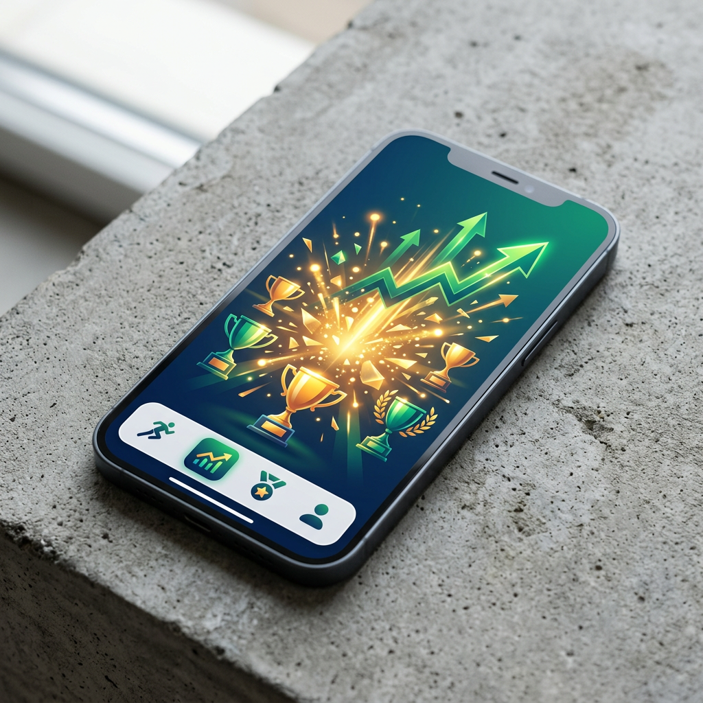
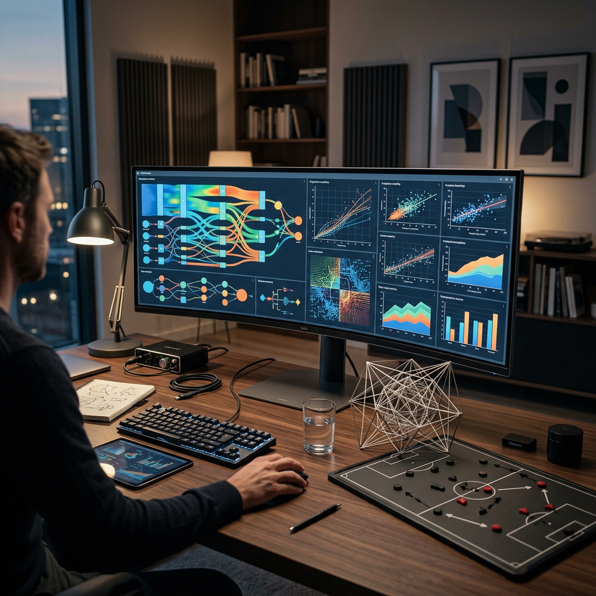

Introduction : Les Casinos Non-AAMS avec Retrait Immédiat
Les joueurs italiens sont de plus en plus frustrés par les délais de paiement imposés par les plateformes réglementées par l'AAMS (Amministrazione Autonoma dei Monopoli di Stato), désormais connue sous le nom d'ADM. L'attente de plusieurs jours, voire semaines, pour recevoir ses gains devient un obstacle majeur à une expérience de jeu satisfaisante. C'est pourquoi de nombreux utilisateurs se tournent vers les casinò non aams che pagano subito, des plateformes internationales qui promettent des transactions rapides et efficaces.
Ces casinos opèrent sous des licences étrangères reconnues, comme celles délivrées par Curaçao, Malte ou le Costa Rica. Contrairement au système italien, ces sites privilégient la rapidité d'exécution et l'automatisation des processus financiers. Le terme "retrait immédiat" désigne généralement un délai allant de quelques minutes à 24 heures maximum, selon la méthode de paiement choisie. Cette célérité représente un avantage considérable pour les joueurs qui souhaitent disposer rapidement de leurs fonds.
L'objectif principal de ces plateformes est d'offrir une alternative viable aux casinos traditionnels italiens, en éliminant les contraintes bureaucratiques qui ralentissent les transactions. En 2026, le marché des casinos sans licence AAMS connaît une croissance exponentielle, attirant des milliers de joueurs italiens à la recherche de transparence, de vitesse et de conditions de jeu plus avantageuses.
Comment Fonctionnent les Paiements dans les Casinos Non-AAMS
La rapidité des retraits dans ces casinos repose sur une infrastructure technologique avancée et des systèmes de traitement automatisés. Contrairement aux plateformes AAMS qui doivent respecter des protocoles administratifs stricts, les casinos internationaux disposent d'une plus grande flexibilité opérationnelle. Les demandes de retrait sont traitées par des algorithmes qui vérifient instantanément l'éligibilité du joueur et la validité de la transaction.
Le processus commence dès qu'un joueur soumet sa demande de retrait depuis son compte. Le système vérifie automatiquement si le compte est vérifié (KYC), si les conditions de bonus ont été remplies et si les limites de retrait sont respectées. Si toutes les conditions sont réunies, le paiement est approuvé en quelques minutes. Cette automatisation élimine l'intervention humaine qui peut causer des retards de plusieurs jours dans les casinos traditionnels.
Il est important de comprendre que le terme "immédiat" ne signifie pas toujours instantané. Selon la méthode de paiement choisie, les délais varient : les cryptomonnaies permettent des transferts en 10 à 30 minutes, les portefeuilles électroniques prennent généralement 2 à 6 heures, tandis que les cartes bancaires peuvent nécessiter jusqu'à 24 heures. Les virements bancaires traditionnels restent les plus lents, avec des délais pouvant atteindre 3 à 5 jours ouvrables.
Critères pour Choisir un Casino avec Retrait Immédiat Sécurisé
La sélection d'un casino non-AAMS fiable nécessite une évaluation rigoureuse de plusieurs critères essentiels. Le premier élément à vérifier est la licence de jeu. Même si le site n'est pas réglementé par l'AAMS, il doit posséder une licence valide délivrée par une autorité reconnue. Les licences de Curaçao, de Malte (MGA) ou du Royaume-Uni (UKGC) sont considérées comme les plus fiables du secteur.
La réputation du casino constitue un indicateur crucial de sa fiabilité. Il est recommandé de consulter les forums de joueurs, les sites d'avis indépendants et les réseaux sociaux pour connaître les expériences réelles d'autres utilisateurs. Les casinos qui retardent systématiquement les paiements ou qui imposent des conditions abusives sont rapidement identifiés par la communauté des joueurs. Lors de la sélection des siti casino non aams, il est fondamental de vérifier la présence de protocoles de sécurité SSL qui protègent les données personnelles et financières.
Le service client représente également un facteur déterminant. Un casino sérieux propose un support disponible 24h/24 et 7j/7, accessible via plusieurs canaux de communication (chat en direct, email, téléphone). La rapidité et la qualité des réponses fournies permettent d'évaluer le professionnalisme de la plateforme. Un test simple consiste à contacter le support avant l'inscription pour poser des questions sur les délais de retrait et les méthodes de paiement disponibles.
Vérification des Conditions de Retrait
Avant de s'inscrire, il est essentiel de lire attentivement les termes et conditions relatifs aux retraits. Certains casinos imposent des limites quotidiennes ou hebdomadaires qui peuvent entraver l'accès rapide aux gains importants. D'autres exigent un volume de mise minimal avant d'autoriser le premier retrait. Ces conditions doivent être clairement affichées et facilement accessibles sur le site du casino.
Les frais de transaction constituent un autre aspect à considérer. Bien que de nombreux casinos non-AAMS n'imposent pas de frais sur les retraits, certains appliquent des commissions, particulièrement pour les méthodes de paiement traditionnelles. Il est préférable de choisir des plateformes qui offrent au moins une méthode de retrait gratuite, généralement les cryptomonnaies ou certains portefeuilles électroniques.
Méthodes de Paiement pour Retraits Instantanés
Le choix de la méthode de paiement influence directement la rapidité des retraits. Les siti con prelievo immediato privilégient souvent les cryptomonnaies pour obtenir les résultats les plus rapides. Voici une analyse détaillée des options disponibles :
Cryptomonnaies : La Solution la Plus Rapide
Les cryptomonnaies représentent actuellement la méthode de retrait la plus rapide dans les casinos non-AAMS. Bitcoin, Ethereum, Litecoin et les stablecoins comme USDT permettent des transactions confirmées en 10 à 30 minutes. Cette rapidité s'explique par l'absence d'intermédiaires bancaires et la validation directe sur la blockchain. Les casinos crypto offrent également des limites de retrait plus élevées et une confidentialité accrue.

Les avantages des cryptomonnaies incluent : des frais de transaction minimes, l'absence de restrictions géographiques, la protection contre l'inflation et l'anonymat relatif des transactions. Cependant, la volatilité des prix peut représenter un inconvénient. Un gain de 1000 euros converti en Bitcoin peut valoir plus ou moins selon les fluctuations du marché au moment du retrait.
Portefeuilles Électroniques : Rapidité et Fiabilité
Les e-wallets comme Skrill, Neteller, Jeton et ecoPayz constituent une excellente alternative aux cryptomonnaies. Ces services permettent des retraits en 2 à 6 heures dans la plupart des cas. Ils offrent également l'avantage de la stabilité, car les fonds sont conservés en euros sans risque de fluctuation. De nombreux joueurs préfèrent cette option pour sa simplicité d'utilisation et son adoption généralisée.
Pour optimiser la vitesse des retraits via e-wallet, il est recommandé de vérifier le compte du portefeuille électronique avant de l'utiliser sur le casino. Certains services imposent leur propre processus KYC qui peut retarder le premier transfert. Une fois le compte vérifié, les transactions suivantes sont généralement instantanées.
Cartes Bancaires et Virements : Options Traditionnelles
Les cartes de crédit et de débit (Visa, Mastercard) ne sont généralement pas les options les plus rapides pour les retraits, bien qu'elles soient largement acceptées pour les dépôts. Les délais varient de 24 heures à 5 jours ouvrables selon la banque émettrice et les politiques du casino. Les virements bancaires traditionnels (SEPA) prennent généralement 3 à 5 jours ouvrables, ce qui les rend moins adaptés aux joueurs recherchant des paiements immédiats.
Ces méthodes conviennent davantage aux joueurs qui privilégient la familiarité et la sécurité plutôt que la vitesse. Elles permettent également de transférer des montants plus importants, bien que certains casinos imposent des limites spécifiques selon la méthode choisie.
Le Rôle de la Vérification KYC dans les Délais de Retrait
La procédure KYC (Know Your Customer) constitue une étape incontournable dans la plupart des casinos en ligne légitimes, qu'ils soient réglementés par l'AAMS ou par des autorités étrangères. Cette vérification vise à prévenir le blanchiment d'argent, la fraude et le jeu des mineurs. Elle exige généralement la soumission de documents d'identité (carte d'identité, passeport), d'une preuve de résidence (facture de services publics, relevé bancaire) et parfois d'une photo du mode de paiement utilisé.

Le moment où le casino demande la vérification influence directement la rapidité du premier retrait. Certaines plateformes permettent de jouer sans vérification immédiate, mais bloquent le retrait jusqu'à ce que les documents soient approuvés. Cette approbation peut prendre de quelques heures à 72 heures selon le volume de demandes et l'efficacité du service client.
Pour garantir un premier retrait véritablement immédiat, il est fortement conseillé de compléter le processus KYC dès l'inscription, avant même d'effectuer un dépôt. Cette approche proactive élimine les retards potentiels et permet d'encaisser les gains dès qu'ils sont demandés. Certains casinos offrent même des bonus ou des limites de retrait augmentées pour les comptes vérifiés.
Documents Nécessaires pour la Vérification
La liste standard des documents requis comprend : une pièce d'identité officielle avec photo (carte d'identité nationale, passeport, permis de conduire), un justificatif de domicile datant de moins de trois mois (facture d'électricité, de gaz, d'eau ou relevé bancaire), et une photo ou capture d'écran du mode de paiement utilisé pour les dépôts (montrant le nom du titulaire et les derniers chiffres du compte).
Il est crucial de fournir des documents de haute qualité, lisibles et non expirés. Les images floues ou les scans de mauvaise qualité entraînent systématiquement des demandes de resoumission qui prolongent le processus. Les documents doivent être envoyés au format JPEG ou PDF, avec une taille de fichier respectant les limites imposées par la plateforme.
Avantages et Inconvénients des Casinos qui Paient Immédiatement
Les casinos non-AAMS avec retraits rapides présentent des avantages significatifs, mais comportent également certains risques qu'il convient d'évaluer avant de s'inscrire. Une analyse équilibrée permet de prendre une décision éclairée.
Avantages Principaux
- Rapidité des transactions : Les retraits sont traités en quelques minutes à 24 heures maximum, contre plusieurs jours dans les casinos AAMS traditionnels.
- Limites de retrait élevées : De nombreux joueurs choisissent un casino senza aams spécifiquement pour les plafonds de retrait plus généreux qui peuvent atteindre 10 000 euros ou plus par transaction.
- Bonus et promotions attractifs : Les casinos internationaux offrent souvent des bonus de bienvenue plus importants, avec des pourcentages de match pouvant atteindre 200% ou 300%.
- Anonymat accru : L'utilisation de cryptomonnaies permet de préserver une certaine confidentialité dans les transactions financières.
- Catalogue de jeux étendu : Ces plateformes proposent généralement une sélection plus large de jeux, incluant des fournisseurs non disponibles sur les sites AAMS.
- Absence de taxation immédiate : Les gains ne sont pas systématiquement déclarés aux autorités fiscales italiennes, bien que les joueurs restent légalement tenus de les déclarer.
Inconvénients et Risques à Considérer
- Absence du registre d'auto-exclusion RUA : Les casinos non-AAMS ne sont pas connectés au système italien de protection des joueurs à risque, ce qui augmente les dangers pour les personnes vulnérables au jeu compulsif.
- Protection légale limitée : En cas de litige avec le casino, le recours juridique est plus complexe car la plateforme opère depuis une juridiction étrangère.
- Volatilité des cryptomonnaies : Les gains retirés en Bitcoin ou autres cryptos peuvent subir des variations de valeur significatives avant conversion en euros.
- Vérification fiscale : Les autorités italiennes renforcent progressivement les contrôles sur les transactions internationales, ce qui peut entraîner des demandes de justification.
- Qualité variable du support client : Tous les casinos non-AAMS n'offrent pas un service client en italien, ce qui peut compliquer la résolution de problèmes.
- Risque de sites frauduleux : Le marché non réglementé attire également des opérateurs peu scrupuleux qui peuvent refuser les paiements ou imposer des conditions abusives.
Conseils pour Accélérer l'Encaissement des Gains
Plusieurs stratégies permettent d'optimiser les délais de retrait et de garantir un accès rapide aux fonds gagnés. Ces pratiques sont recommandées par les joueurs expérimentés qui utilisent régulièrement les casino che pagano subito.
Utiliser la Même Méthode pour Dépôts et Retraits
La majorité des casinos en ligne exigent que le premier retrait soit effectué via la même méthode que le dépôt initial. Cette politique vise à prévenir le blanchiment d'argent et à garantir que les fonds retournent au propriétaire légitime du compte. Si vous déposez avec Skrill, planifiez de retirer également via Skrill. Cette cohérence élimine les vérifications supplémentaires qui peuvent retarder le paiement.
Dans certains cas, si la méthode de dépôt ne supporte pas les retraits (comme certaines cartes prépayées), le casino autorisera une méthode alternative après vérification d'identité. Cependant, cette exception implique généralement un délai supplémentaire pour valider la nouvelle méthode de paiement.
Éviter les Bonus Actifs lors des Retraits
Les bonus de casino s'accompagnent toujours de conditions de mise (wagering requirements) qui doivent être remplies avant de pouvoir retirer les gains générés avec les fonds bonus. Si vous avez un bonus actif et que vous tentez un retrait prématuré, le casino annulera généralement le bonus et les gains associés. Pour maximiser la rapidité, attendez de satisfaire intégralement les exigences de mise ou jouez uniquement avec de l'argent réel.
Certains casinos proposent une option permettant de refuser les bonus lors du dépôt. Cette option est recommandée pour les joueurs qui privilégient la flexibilité de retrait plutôt que les avantages promotionnels. L'argent réel peut être retiré à tout moment, sans contrainte de mise.
Compléter la Vérification KYC en Avance
Comme mentionné précédemment, la vérification d'identité constitue souvent le principal obstacle à un retrait instantané. En soumettant vos documents dès l'inscription, vous éliminez ce délai lors de votre première demande de retrait. Conservez des copies numériques de haute qualité de vos documents d'identité pour les soumettre rapidement à tout nouveau casino.
Vérifier les Limites de Retrait
Chaque casino impose des limites quotidiennes, hebdomadaires ou mensuelles sur les montants retirables. Ces plafonds varient considérablement selon la plateforme et parfois selon le statut VIP du joueur. Si vous gagnez un montant important, vérifiez immédiatement les limites applicables à votre compte. Dans certains cas, il peut être nécessaire de fractionner le retrait en plusieurs transactions étalées sur plusieurs jours.
Contacter le Support Client de Manière Proactive
Si vous constatez un retard inhabituel dans le traitement de votre retrait, contactez immédiatement le service client via le chat en direct. Un agent peut souvent accélérer manuellement le processus ou identifier rapidement la cause du blocage (document manquant, vérification supplémentaire nécessaire, etc.). La communication proactive permet de résoudre les problèmes avant qu'ils ne s'aggravent.
Comparaison : Casinos AAMS vs Casinos Non-AAMS
| Critère | Casinos AAMS/ADM | Casinos Non-AAMS |
|---|---|---|
| Délai de retrait | 3-7 jours ouvrables | Quelques minutes à 24 heures |
| Limite de retrait | Souvent plafonnée à 5 000€/mois | 10 000€ à illimité selon le casino |
| Taxation des gains | Prélèvement à la source (PREU) | Déclaration volontaire du joueur |
| Bonus de bienvenue | Limités par la réglementation (max 100%) | 200% à 400% possibles |
| Protection légale | Totale (AAMS/ADM supervisé) | Limitée (juridiction étrangère) |
| Méthodes de paiement | Traditionnelles (cartes, virements) | Cryptomonnaies, e-wallets, cartes |
| Auto-exclusion | Registre national RUA | Absent ou limité au casino |
| Sélection de jeux | Fournisseurs autorisés uniquement | Large éventail international |
Cette comparaison illustre clairement les compromis entre sécurité réglementaire et flexibilité opérationnelle. Les casinos AAMS offrent une protection maximale mais au prix de contraintes administratives et financières. Les casinos non-AAMS privilégient la rapidité et les avantages commerciaux, mais exigent une vigilance accrue de la part du joueur.
Responsabilité et Jeu Conscient
L'absence de connexion au système d'auto-exclusion italien (RUA) dans les casinos non-AAMS représente un risque significatif pour les joueurs vulnérables. Ces plateformes ne peuvent pas vérifier si un utilisateur s'est auto-exclu sur le marché italien, ce qui facilite l'accès pour les personnes souffrant de dépendance au jeu.
Il est essentiel d'adopter une approche responsable du jeu en ligne. Fixez-vous des limites de dépôt et de perte avant de commencer à jouer. Ne jouez jamais avec de l'argent destiné aux dépenses essentielles (loyer, nourriture, factures). Utilisez les outils de jeu responsable proposés par les casinos, tels que les limites de temps de session, les limites de dépôt quotidiennes et les options d'auto-exclusion temporaire.
Si vous constatez que le jeu affecte négativement votre vie personnelle, professionnelle ou financière, n'hésitez pas à consulter des organisations spécialisées comme Giocatori Anonimi Italia ou à contacter les services d'assistance téléphonique dédiés. Le jeu doit rester un divertissement, jamais une source de revenus réguliers.